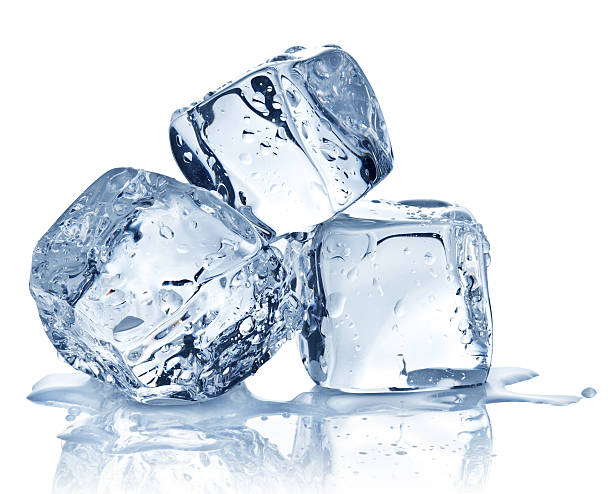

Helado de H20

Helado caceso insaboro
Ingredientes
- Agua potable, tambien funciona el agua mineral o cualquier liquido consumible
- Recipiente donde vertir el agua
- una cuchara pequeña
Pasos
- Vierta el agua en el recipiente
- Introduzca la cucharilla en el recipiente con agua
- Deje en el congelador un par de horas
- Disfrute su helado insaboro, lo mejor, sin conservantes